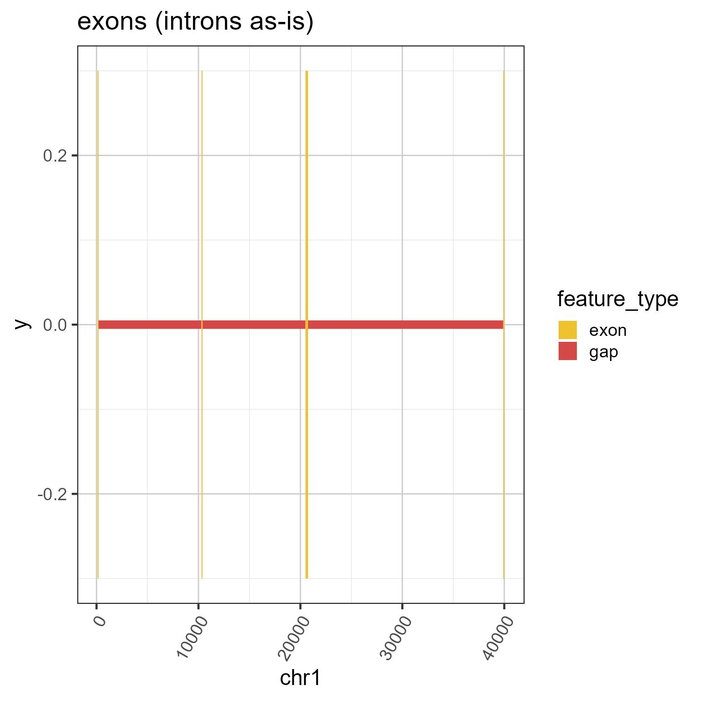
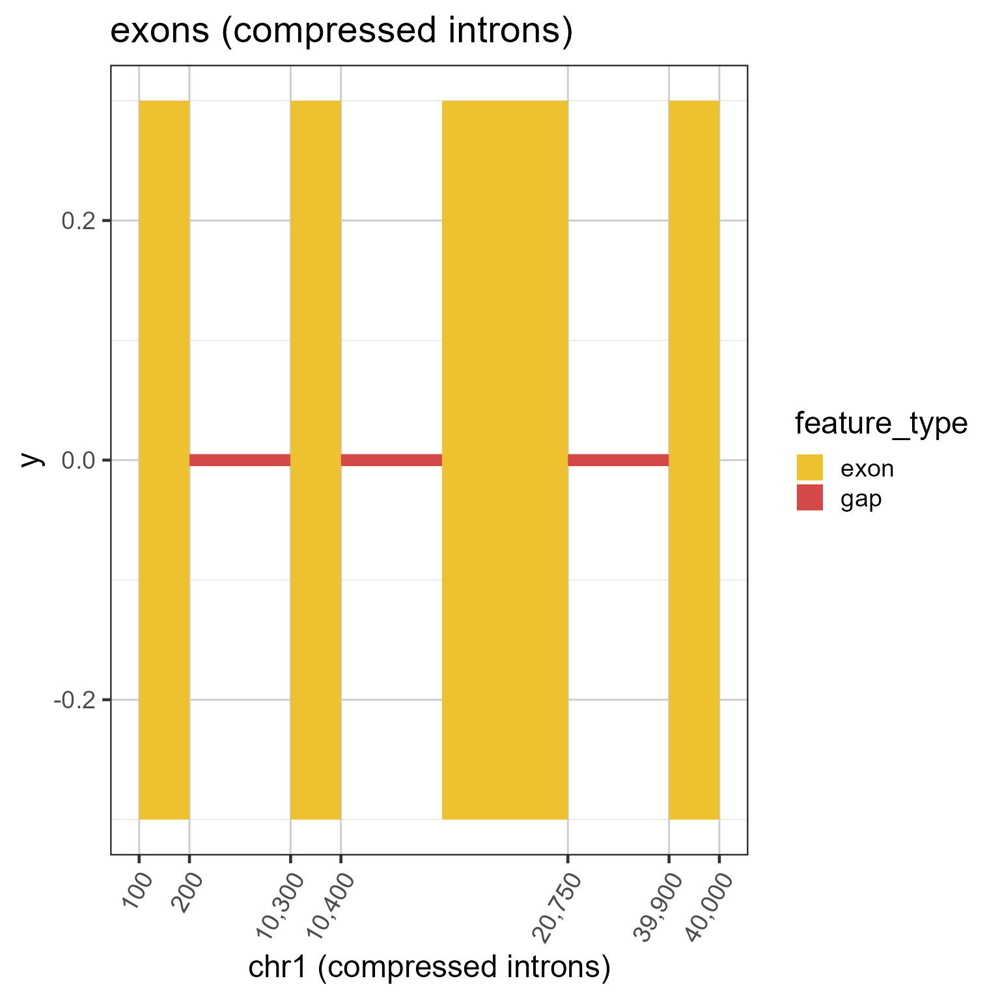

Create a ref2compressed function to compress GR gaps
Usage
make_ref2compressed(
gr,
gapWidth = getOption("splicejam.gap", 200),
keepValues = FALSE,
upstream = 50000,
upstreamGapWidth = gapWidth * 3,
downstream = 50000,
downstreamGapWidth = gapWidth * 3,
nBreaks = 7,
ignore.strand = TRUE,
verbose = FALSE,
...
)Arguments
- gr
GRangesobject containing regions not to compress. Regions which are unstranded gaps are compressed to fixed width.- gapWidth
integervalue, default 200 from optionsoptions('splicejam.gap'), to set a fixed gap width, or when NULL the gap width is defined as 3 times the median feature width.- keepValues
logicalindicating whether to keep feature values in the GRanges data, default FALSE.- upstream, downstream, upstreamGapWidth, downstreamGapWidth
integernumber of bases to extend upstream and downstream the overall range of features, and the number of bases to compress that extended range, respectively. Any coordinates upstream by the 'upstream' amount will be compressed into 'upstreamGapWidth' bases in visual space. This ratio represents a visual compression multiplier. The compression is applied to upstream coordinate zero, and to downstream coordinate 10 billion. Defaults are 50000 for upstream and downstream, and three times the gap width3 * gapWidth.- nBreaks
integernumber of x-axis coordinate breaks used in ggplot labeling, default 7.- ignore.strand
logicaldefault TRUE, new as of 0.0.89.900, will create compressed coordinates by ignoring strand-specificity. Use FALSE for previous behavior, although it would be limited to scenarios where two features on opposite strands should not be used to produce one common set of "gaps" between the genome region features. In most cases, typical splicejam functionality is unaffected, but implies gaps should ignore strandedness.- verbose
logicalindicating whether to print verbose output.- ...
additional arguments are ignored.
Value
list with trans_grc which is class "trans" suitable
for use in ggplot2 functions; transform a function that converts
chromosome coordinates to compressed coordinates; inverse a function
that converts compressed coordinates to chromosome coordinates;
scale_x_grc a function used similar to ggplot2::scale_x_continuous()
during ggplot2 creation; gr a function that compresses coordinates
in a GRanges object; grl a function that compresses coordinates in
a GRangesList object. Attributes "lookupCoordDF" is a two-column
data.frame with chromosome coordinates and compressed coordinates,
which is used to create the other transformation functions via
stats::approx(); "gapWidth" the gap width used, since it can
be programmatically defined; "gr" the GRanges input data used
to train the transformation.
Details
This function takes a set of GRanges which are to be maintained with fixed aspect ratio, and it defines a function to compress coordinates of the gaps between GRanges features.
See also
grl2df(), test_junc_wide_gr
Other Sashimi prep functions:
exoncov2polygon(),
gene2gg(),
grl2df(),
plotSashimi(),
prepareSashimi()
Examples
suppressPackageStartupMessages(library(GenomicRanges));
suppressPackageStartupMessages(library(ggplot2));
data(test_exon_wide_gr);
# To plot a simple GRanges object
widedf <- grl2df(test_exon_wide_gr);
ggWide <- ggplot(widedf, aes(x=x, y=y, group=id, fill=feature_type)) +
geom_polygon() +
colorjam::theme_jam() +
colorjam::scale_fill_jam() +
xlab("chr1") +
ggtitle("exons (introns as-is)")
print(ggWide);

# Now compress the introns keeping axis labels
ref2c <- make_ref2compressed(test_exon_wide_gr,
nBreaks=10);
ggWide2 <- ggWide +
scale_x_continuous(trans=ref2c$trans_grc) +
xlab("chr1 (compressed introns)") +
ggtitle("exons (compressed introns)")
print(ggWide2);
